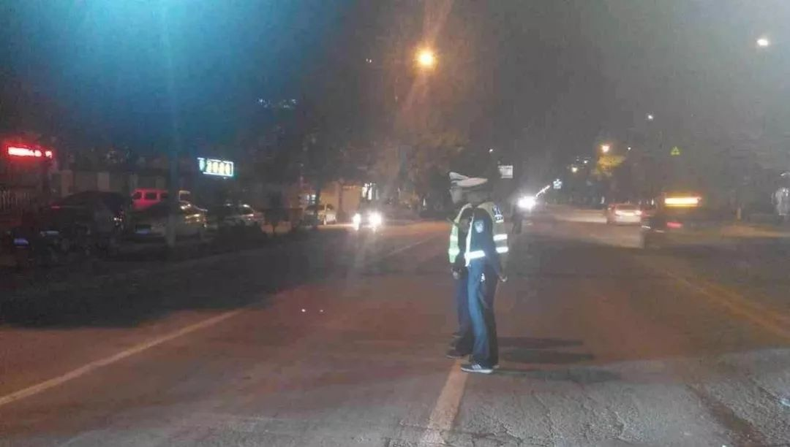

疫情危机中不被看见的人们：武汉周边城市百姓的自救行动
原文链接 备份链接 新型冠状病毒疫情像是一场突如其来的阴霾，在这个冬天笼罩了华中大地。相较于最受关注的武汉市民，周边城市的人们，像是处在阴霾边缘，遭受侵袭，却又不常被看见。面对重重困难，孝感、黄冈、黄石、信阳、荆州、天门……各个城市的百姓 …
“招呼好乐乐、可可。”登机后，晓阳立即给男友林峰发了微信，不放心他们一起养的两只宠物，其实是更不放心男友。
“你才要照顾好自己。”
“要登机了吗？”
“那俩小的你不用担心。”
“一落地记得给我打个电话。”
男友光速回复了四条微信。
2月2日下午14点，晓阳作为赴武汉志愿医疗支援队的医护人员，登上了出征武汉的飞机。这是关机前他和男友林峰的对话。
2月2日星期日的凌晨，晓阳收到本院领导的微信，准备好个人物品，待命。终于要奔赴疫区了。
虽然上交请战书的时候他就做好了准备，然而在接到的通知的那一刻，晓阳还是有些惶恐。他是第二批医疗队里资历最浅的一个，面对这场浩大的疫情，面对每天不断上涨的感染和死亡人数，他说“说不害怕，那是假的。”但晓阳曾支援过甲流、禽流感的疫情，也曾奔赴汶川参加地震后的医疗援助。他知道：“穿上了白衣，救死扶伤就是我的天职。”
上午男友就陪晓阳出门买东西，“买了很多东西，用得到用不到的东西，只要想到他就全部都买上了。”男友把晓阳送到医院，看着晓阳和同事们一起宣誓，给他照相。临走时林峰把自己妈妈给晓阳准备的护身符放到他的书包里。让晓阳感觉“挺暖的”。

油画作品《白衣天使》
晓阳当了一辈子医生的老爸也叮嘱：“千万做好防护，进病房时一定互相检查一下防护措施是否到位，对病人要耐心细致，要做好战胜各种困难的思想准备。”
晓阳心道：“老大夫说的真好，儿子记住了。17年前你和妈共同参加了抗击SARS的战斗，17年后，换儿子去和新冠肺炎斗争了，老子英雄儿好汉，我不会输的。”
在机场，朋友带着物资来给晓阳他们送行，说好不哭的，结果朋友还是抱着晓阳哭成了泪人。晓阳对她说：“好啦，我会完完整整安安全全的回来的，别担心。”
晓阳一行赴武汉志愿队的医护人员，很多人的老公老婆、男友女友都来相送，他们有的拥抱，有的手拉着手，但林峰只能远远地在人丛中给晓阳照相。看着那些相互依偎的夫妻、情侣，而自己和伴侣只能远远相望，晓阳说：“有点嫉妒他们。”晓阳30岁，林峰38岁，两个人在一起六年半，一起住了四年。父母知道两个人的关系，虽说不明确反对但也不支持。
“北京，北京，我要走啦。真心地希望，我回来的时候。我们能摘下口罩，看到彼此的微笑！”专机上的135人都是支援武汉的医生护士，他们将出现在疫情最严重的地方，迎接即将到来的战斗。
16:34，晓阳和同事们抵达武汉天河机场。

到了武汉的第二天，晓阳就通过医生同行了解到，情况仍然危急，很多病人在苦苦等着医院的床位。
虽然得知医院在征选医护人员上前线后，晓阳立即报了名，但这次疫情如此严重，让他也很忐忑，“新型冠状病毒通过呼吸道、飞沫传染，新发现还可以通过粪口传播，病毒可能快速变异，是否还有新的传染途径也不知道。”原定支援一周，但看到武汉这么严谨的疫情形势，晓阳觉得可能要待到疫情得到控制为止。
现在疫区医疗物资紧张，为了这次战役，晓阳他们医院把防护服都支援武汉的医院了，所以大家没带防护服，说是武汉的医院里会有，但今天了解到，他们支援的这家医院，防护设备也很少。而且也没有生活用品，要自己准备。男友带的东西到了现场发现有的用不上。今晚就要投入工作，晚上就有病人入住，所以晓阳趁着下午的一会空闲，到超市来生活必需品。

除了脸盆牙刷之外，晓阳还买了不少成人纸尿裤，因为防护服严重短缺，每套防护服要尽量穿得长一点，每次工作至少五六个小时，如果上厕所，就要脱防护服，穿脱要很长时间，再穿新的防护服之前要洗澡，洗至少半小时，所以为了省时间、为了不多耗费防护服，医护人员会穿着纸尿裤工作，小便就在防护服内的纸尿裤里解决。
晓阳所在医院开辟出几十张床位，专门接收新冠肺炎的危重病人。今天晚上晓阳就要投入战斗。

男友其实不想让晓阳来，很担心，但还是“很识大体”地选择支持晓阳的工作。这个春节晓阳和林峰都没过好。整个假期晓阳都在医院支援，而林峰工作是警察，也是在防疫一线，这段时间经常要到室外工作，去火车站这样人流非常密集的地方巡查，保障群众安全。
林峰说晓阳的工作状态他很理解，也早已习惯。“在哪？病人什么情况？那好，我马上去！！”晓阳挂上电话就开始穿衣服，经常凌晨睡眼惺忪，就被突如其来的电话惊醒。晓阳轻手轻脚起身，麻利的套上衣服，简单收拾一下，就悄悄带上门走了。
林峰不再装作没被吵醒，伸手感受着那一半温暖的被窝，久久不能睡去。只有心里默默祈祷：“在生与死的抢救线上，我愿你有最佳的状态，来应对各种最糟糕的情况。亲爱的宝啊，病人健康平安！你早点归来。”
晓阳是医院急诊室的男护士，每天遇到的都是或者危重或紧急的病人，男护士在科室里“身强力壮”，总是要干得更多一些。晓阳总是穿着一袭绿衣，一双白布鞋，带着一顶带有卡通图案的护士帽，干练敏捷，不怠慢，不犹豫，守护患者的健康。身为同志，更有同理心，也更会体贴人，他的眼眸里流露出的关怀，常常给病区的病人们带来温暖。
家有个医疗工作者，这种夜里出诊的情况，林峰早已司空见惯。有一次，一个寒风凌冽的冬日傍晚，林峰牵着晓阳的手送他去上班。前面一条街就到医院了，突然前面嘈杂一片，原来有人晕倒。晓阳加快脚步，挤了人群，蹲下身子，跪在冰雪夹杂的路面，检查起倒地者的情况。倒地者没了意识，没了呼吸，没了心跳，晓阳回头冲林峰喊“快打120！”，之后立即俯下身子，开始按压。还不忘回头喊着：“有没有家属？”1、2、3、4，非常用力，天气很冷，哈气在口鼻间弥漫，晓阳就一直跪在雪地上。急救车来了，晓阳跟上车，一车人疾驰而去，林峰也赶忙跑回家——为晓阳找干衣替换膝盖湿了的裤子。
家里有个护士，心里除了理解，更多的是一份浓浓的歉意，因为林峰是警察，工作时间同样随叫随到。随时突发的警情，让他很多次抛下同样辛劳的晓阳，匆忙离家出警。

小小的二人世界里，总有着这样那样的紧急情况，一个出诊，一个出警，仅有的相伴时光里，时常会遇到打扰。如何权衡，如何取舍，如何兼顾？互相的支持，是他们两个的选择。
他们知道：生命所系，性命相托。一个要守百姓健康，一个要守一方平安。
林峰经常去接晓阳下班，在来去匆匆的人群中寻找那顶小花帽。看到医生和护士们身着象征着生命的绿色忙碌，他们穿梭在需要护理的病人之间，宛若天使。
父母知道晓阳和男友的多年感情，但态度一直不是很支持。我在问晓阳这篇稿子想要发在大众公众号上吗，他说想发在亲友会的号上，就想让同志家长们看到，同志孩子也是很有责任感、很有担当的。
希望疫情早点过去。今晚晓阳就要穿着防护服开始为病人奔忙。祝晓阳早日平安归来，希望所有的白衣天使都健康平安！
（为采访当事人的职业未来考虑，删掉了他们提供的图片，并改为化名）
路LRH
谢谢观赏
长按二维码向我转账
谢谢观赏
受苹果公司新规定影响，微信 iOS 版的赞赏功能被关闭，可通过二维码转账支持公众号。
原文链接 备份链接 新型冠状病毒疫情像是一场突如其来的阴霾，在这个冬天笼罩了华中大地。相较于最受关注的武汉市民，周边城市的人们，像是处在阴霾边缘，遭受侵袭，却又不常被看见。面对重重困难，孝感、黄冈、黄石、信阳、荆州、天门……各个城市的百姓 …
原文链接 备份链接 感觉他长大了，希望他会理解我的行为，也希望我的行为能引发他对未来的思考，学习是为了什么，将来想要成为怎样的人。 记者 | 应 琛 “过年前夕，武汉爆发了‘新型冠状病毒’，妈妈爸爸在讨论之后决定过年不出去旅游了，我表示很 …
原文链接 备份链接 口述 |武汉市肺科医院ICU主任 胡明 采访 |潇湘晨报记者 耿志方 温艳丽 廖如云 记录 |实习生 赵鸿婕 朱文静 杨丽英 谭思慧 林颖娴 对于胡明来说，他根本没空看疫情的新闻，哪怕是春晚，除夕和初一都没来得及在同事 …
原文链接 备份链接 武汉各大医院发热门诊的紧张态势已有一周，七家定点医院启动才两天已被压到极限。 武汉不缺顶级医院，不缺顶级专家，不缺顶级医疗能力，缺的是公共卫生防控能力、行政效率和疫情处理流程。 在患者和大医疗机构之间，未见到基层 …
原文链接 备份链接 口述 | 许平 记者 | 王珊 从2019年12月31日到现在，我所在医院的病人越来越多了，以发热门诊为例，目前每天病人的体量已经是医院平常病人数的10多倍，我们医院还在距离市中心比较偏的医院。冬季本身就是流感高发季， …